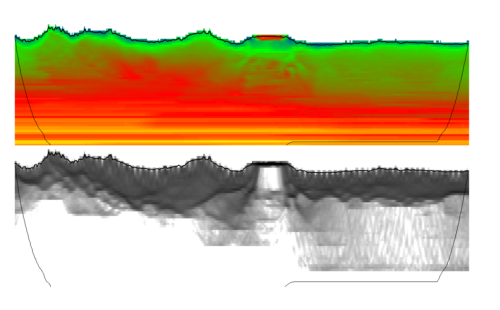

Home | Phoenix | DeepTrace | Company
Home | Phoenix | DeepTrace | Company
 Velocity inversion found using Phoenix ANS tomography
Phoenix is a near surface modeling and refraction statics package designed for the next generation of seismic surveys. Designed to run the largest datasets in hours instead of weeks, Phoenix offers unheard of performance.
With vastly superior geophysical modeling capabilities, integration of additional well-log data as constraints, and seamless survey merges, Phoenix offers seismic processing options that can’t be found anywhere else.
Every day tasks such as data import and survey merges, delay time and tomographic modeling, picking and QC procedures have all been parallelized and distributed, leading to speedup factors of 5-50x over competitive software such as Flatirons.
Read our case-study using Phoenix and DeepTrace to process a difficult survey produced in partnership with Fairfield here: 
We have also released results using Phoenix and DeepTrace to process a survey in partnership with Schlumberger. Download the presentation here (27MB).
Phoenix’s key features include:
And much more! To request a demo of Phoenix or enquire about pricing, please contact us.
Current Phoenix users can find the documentation here.